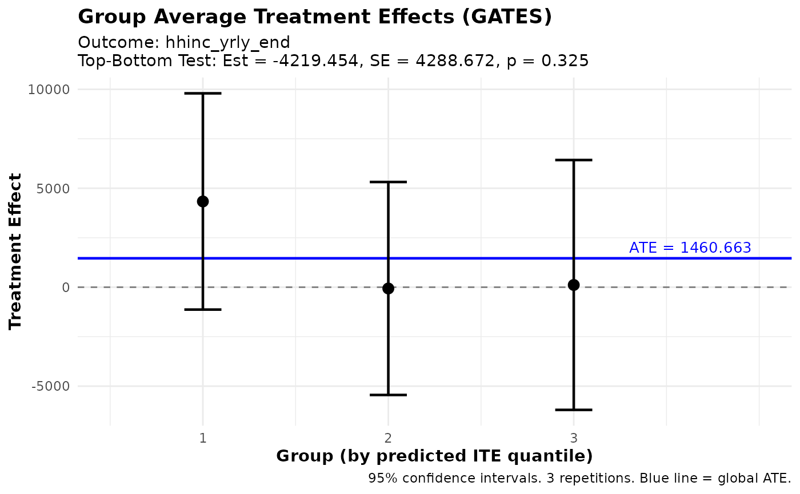

Computes Group Average Treatment Effects (GATES), an estimand introduced by Chernozhukov et al. (2025) to measure average treatment effects for groups defined by predicted value quantiles.
This function works with both ensemble_hte_fit (groups by predicted ITE)
and ensemble_pred_fit (groups by predicted Y). For prediction fits, a
treatment variable must be specified.
This function implements the multiple-split estimation strategy developed by Fava (2025), which combines predictions from multiple machine learning algorithms into an ensemble and averages GATES estimates across M repetitions of K-fold cross-fitting to improve statistical power.
Usage
gates(
ensemble_fit,
n_groups = 3,
outcome = NULL,
treatment = NULL,
prop_score = NULL,
controls = NULL,
restrict_by = NULL,
subset = NULL,
group_on = c("auto", "all", "analysis")
)Arguments
- ensemble_fit
An object of class
ensemble_hte_fitfromensemble_hte()orensemble_pred_fitfromensemble_pred().- n_groups
Number of groups to divide the sample into (default: 3)
- outcome
Either:
NULL (default): uses the same outcome as in the ensemble function
Character string: column name in the
dataused in the ensemble functionNumeric vector: custom outcome variable (must have same length as data)
This allows computing GATES for a different outcome than the one used for prediction.
- treatment
For
ensemble_pred_fitonly. The treatment variable:Character string: column name in the
dataused inensemble_pred()Numeric vector: binary treatment variable (must have same length as data)
Ignored for
ensemble_hte_fit(uses the treatment from the fit).- prop_score
For
ensemble_pred_fitonly. Propensity score:NULL (default): estimated as mean of treatment variable
Character string: column name in the
dataused in the ensemble functionNumeric value: constant propensity score for all observations
Numeric vector: observation-specific propensity scores
For
ensemble_hte_fit, uses the propensity score from the fit.- controls
Character vector of control variable names to include in regression. These must be column names present in the
dataargument used when calling the ensemble function.- restrict_by
Optional. Stratification variable for restricted ranking:
NULL (default): unrestricted ranking across full sample within folds
Character string: column name in the
datafor stratified rankingNumeric/factor vector: group indicator (must have same length as data)
When specified, predicted values are ranked within each stratum (and fold), rather than across the full sample.
- subset
Which observations to use for the GATES analysis. Options:
NULL (default): uses all observations (or training obs for
ensemble_pred_fitwhen using the default outcome with subset training)"train": uses only training observations (forensemble_pred_fitonly)"all": explicitly uses all observationsLogical vector: TRUE/FALSE for each observation (must have same length as data)
Integer vector: indices of observations to include (1-indexed)
This allows evaluating GATES on a subset of observations. Note that GATES requires observations from both treatment and control groups in the subset.
- group_on
Character controlling which observations define the quantile cutoffs used to form groups. One of:
"auto"(default): Uses the ML training population. Forensemble_hte_fitthis is all observations. Forensemble_pred_fitwithtrain_idx, it is the training subset. This ensures an observation's group assignment does not change when you vary the analysis subset."all": Always form groups using all observations."analysis": Form groups within whatever observations are being analyzed (i.e. thesubset).
Has no effect when
subset = NULLand all observations are used.
Value
An object of class gates_results containing:
estimates: data.table with GATES estimates averaged across repetitions. Columns:
group(integer group index, 1 = lowest predicted effects),estimate(group-specific treatment effect),se(standard error),n_reps,t_value,p_valuetop_bottom: data.table with the top-bottom difference test. Columns:
estimate,se,n_reps,t_value,p_valueall: data.table with the average treatment effect (weighted avg of all groups). Columns:
estimate,se,n_reps,t_value,p_valuetop_all: data.table with the top minus average test. Columns:
estimate,se,n_reps,t_value,p_valuen_groups: number of groups used
outcome: the outcome variable used for GATES
targeted_outcome: the outcome used for prediction
fit_type: "hte" or "pred" depending on input
restrict_by: the restrict_by variable used (if any)
controls: control variables used (if any)
group_on: how groups are formed ("auto", "all", or "analysis")
M: number of repetitions
call: the function call
Estimation Procedure
For each repetition \(m = 1, \ldots, M\):
Observations are assigned to
n_groupsquantile-based groups by ranking the ensemble predictions from repetition \(m\) within each fold. Group 1 contains the lowest predicted values and groupn_groupsthe highest. Forming groups within folds ensures that group assignment is independent of the model used to generate predictions for that observation (since predictions are out-of-sample within each fold).A single weighted least squares regression is run on all observations: $$Y_i = \alpha + \sum_{g=1}^{G} \gamma_g \, \mathbf{1}\{i \in g\}(D_i - e(X_i)) + \varepsilon_i$$ where \(e(X_i)\) is the propensity score. Weights are \(1 / (e(X_i)(1 - e(X_i)))\). Each \(\gamma_g\) estimates the average treatment effect for group \(g\).
HC1 heteroskedasticity-robust standard errors are computed (or cluster-robust SEs when
individual_idwas specified).
The final reported estimates and standard errors are the simple averages of the per-repetition estimates and standard errors across all \(M\) repetitions.
Three heterogeneity tests are reported:
Top-Bottom: difference between the top and bottom groups.
All: weighted average of all group effects (estimates the overall ATE).
Top-All: difference between the top group and the overall ATE.
References
Chernozhukov, V., Demirer, M., Duflo, E., & Fernández-Val, I. (2025). Fisher–Schultz Lecture: Generic Machine Learning Inference on Heterogeneous Treatment Effects in Randomized Experiments, with an Application to Immunization in India. Econometrica, 93(4), 1121-1164.
Fava, B. (2025). Training and Testing with Multiple Splits: A Central Limit Theorem for Split-Sample Estimators. arXiv preprint arXiv:2511.04957.
Examples
# \donttest{
data(microcredit)
covars <- c("age", "gender", "education", "hhinc_yrly_base",
"css_creditscorefinal")
dat <- microcredit[, c("hhinc_yrly_end", "treat", covars)]
fit <- ensemble_hte(
hhinc_yrly_end ~ ., treatment = treat, data = dat,
prop_score = microcredit$prop_score,
algorithms = c("lm", "grf"), M = 3, K = 3
)
#> Warning: Some propensity scores are below 0.20 or above 0.80. This package is designed for randomized controlled trials (RCTs), where propensity scores are typically well-balanced. Extreme propensity scores may indicate an observational study or a heavily unbalanced design. Please verify your experimental design.
result <- gates(fit, n_groups = 3)
print(result)
#> GATES Results
#> =============
#>
#> Fit type: HTE (ensemble_hte)
#> Outcome analyzed: hhinc_yrly_end
#> Number of groups: 3
#> Repetitions: 3
#>
#> Group Average Treatment Effects:
#>
#> Group Estimate Std.Error t value Pr(>|t|)
#> ----------------------------------------------------
#> 1 4332.89 2787.61 1.55 0.120
#> 2 -64.33 2745.26 -0.02 0.981
#> 3 113.43 3220.92 0.04 0.972
#>
#> Heterogeneity Tests:
#> ----------------------------------------------------
#> Test Estimate Std.Error t value Pr(>|t|)
#> ----------------------------------------------------
#> Top-Bottom -4219.45 4288.67 -0.98 0.325
#> Top-All -1351.34 2560.09 -0.53 0.598
#>
#> ---
#> Signif. codes: 0 '***' 0.001 '**' 0.01 '*' 0.05 '.' 0.1 ' ' 1
plot(result)

# }